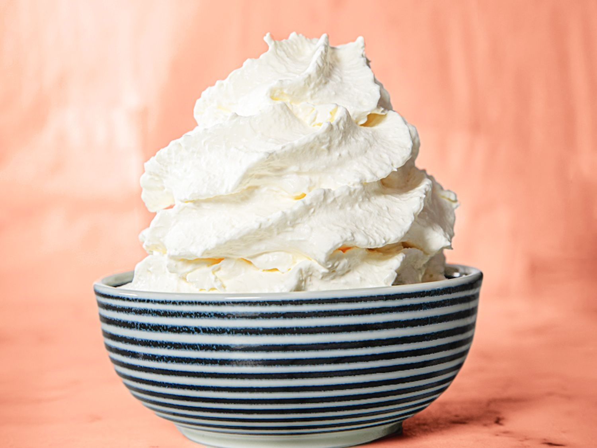

Whipped Cream

Ingredients:
- 1 cup Heavy Whipping Cream
- 2 Tbsp Sugar
- 2 tsp Vanilla Instant Pudding
- Splash of Vanilla Extract
Steps:
- Take a metal bowl and the whisk you're going to use and place them into a freezer for 15 minutes
- Combine everything and whisk with a stand mixer or electric beater. Start slow and progessively mix faster as the mixture thickens
- Mix until soft peaks are achieved. Then manually whisk to the desired consistency, as to not accidentally overmix
- Refrigerate until used